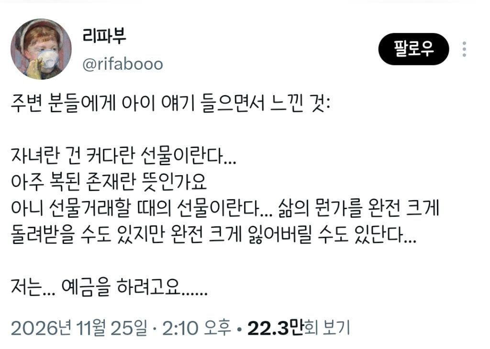
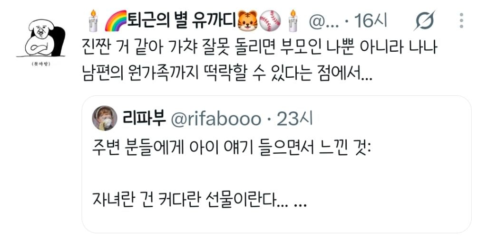

어무니 아부지 마진콜 정말 죄송해요...


어무니 아부지 마진콜 정말 죄송해요...
애 키우면서 돌려받을 생각 1도 안 함
뭐 해주려고하면 해주지
애한테 뭘 돌려받으려함?
행복감
그건 애한테 받는게 아니라 스스로 느끼는것
나도 비슷하게 생각함. 내가 원해서 태어나게한 거고 행복을 줄 책임만 있으며 어떠한 대가도 바라지 않지만 다만 하나 건강하기만 하라고
ㅇㅇ 그냥 밥이나 잘 먹고 안 아프고 건강하기만 해다오
자식농사도 한세대 전 이야기지 요즘 누가 애 키워서 뭐 받으려고 키우나 ㅋㅋㅋ 정부에서 애 앞으로 나오는돈 전부 애 계좌로 밀어넣어서 두돌되면 증여한도 꽉채우는 부모들이 한트럭인데
그러니 잘 키웠어야제